FetUre V21 — исправления по аудиту V20
V21 — это V20 с исправлениями полного UX/UI-аудита: 302 проблем, из них исправлено 284, частично 11, не воспроизвелись 4, перенесено в спецификацию React 2, ждут решения 1. V20 не меняется.
Журнал — docs/design-reference/V21-CHANGELOG.md. Статус по каждому пункту — apps/feture/audit-v20/V21-FIX-STATUS.md, интерактивный отчёт — apps/feture/audit-v20/report.html. Перенос в React — docs/design-reference/V21-INTEGRATION-GUIDE.md. Контракт — tests/prototype-v21-contract.mjs (правила V20 на файле V21).
Решения владельца
| Вопрос | Решение |
|---|---|
| Шрифт | Заголовки — Geologica, текст — Onest. |
| Акцент | #DF234A; в тёмной теме кнопки тоже #DF234A, красный текст светлее (#FF4566). |
Главное
- «Я / Мы» в данных: подписки, голоса в опросах, блокировки, черновики, организатор событий и сообществ, участие в закрытых сообществах, «Нужно решить» партнёра — всё от действующего профиля.
- Пара: создать пару можно из «Я → Моё» и Настроек; новая пара начинается пустой; приглашение видно и отзывается; остановленная пара восстанавливается.
- Приватность: ответы шага «О тебе» по умолчанию «Только ты»; выключение приватной части отзывает доступы и закрывает запросы; «Смотрю незаметно» не включает показ.
- Навигация и компоненты: «‹» не уводит в другую вкладку; вкладки не обрезаются; листы закрываются свайпом; тосты не перекрывают кнопки; единые диалоги и кнопка «+».
- Тихие кнопки ожили: «Сделать главным», «Проверка возраста», лайк ответа не участником (теперь объясняет), «Рядом» в фильтрах, «Изменить решение» по событию пары.
Было → стало
Вкладки не обрезаются
В «Доступах» на 320 px было «Открыто … / Открыто …». Теперь подписи целиком, ряд прокручивается вбок.
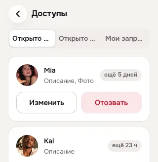
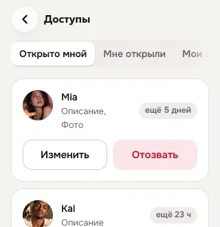
«Я»: вкладки и точки
Точки «новое» стоят на своих вкладках, подписи 14 px не слипаются; заголовки — Geologica.
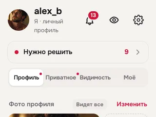
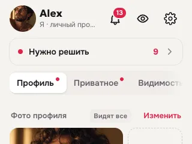
Вход в пару из «Я → Моё»
Раньше создать пару можно было только через QA-панель. Теперь — строка «Пара» со всеми состояниями: создать, приглашение отправлено/получено, остановлена.
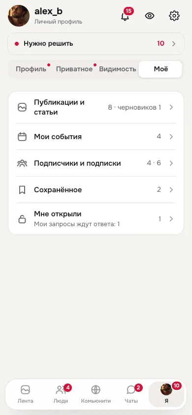
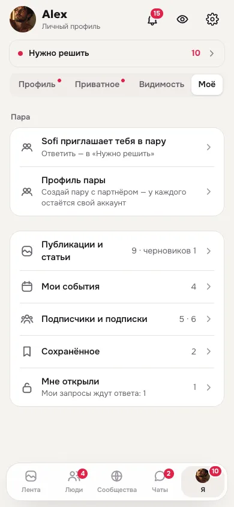
«Подписки» в режиме «Мы»
Раньше лента пары показывала подписки Alex. Теперь — подписки самой пары (у демо-пары их пока нет).
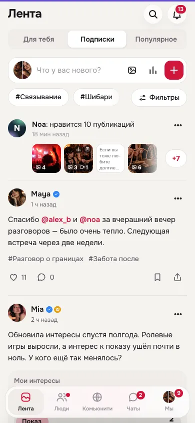
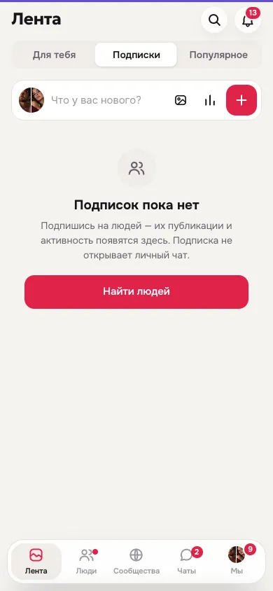
Событие: честные «Идут»
Счётчики «Идут / Интересуются» из реальных данных, ожидающая заявка не показывается как «идёт».
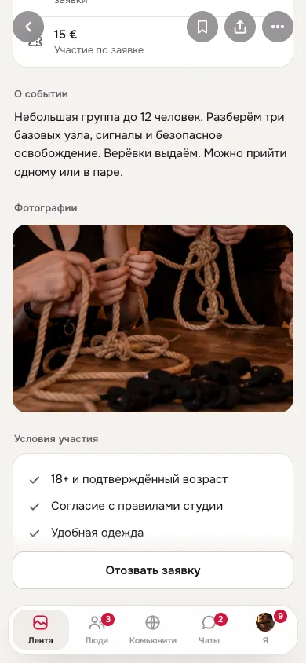
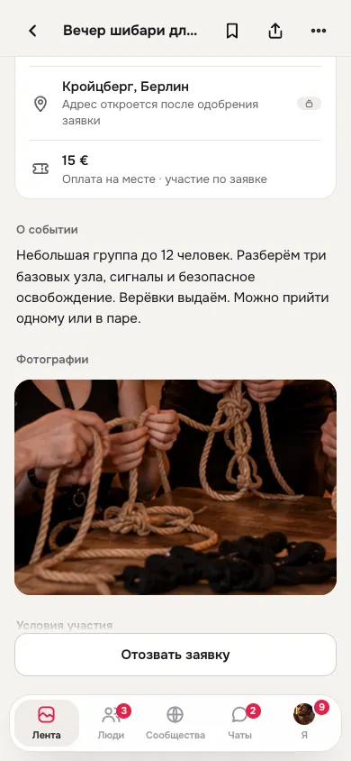
Настройки
«Проверка возраста» открывается, есть «Приватность и видимость», «Пара» и «Скрытое в ленте».
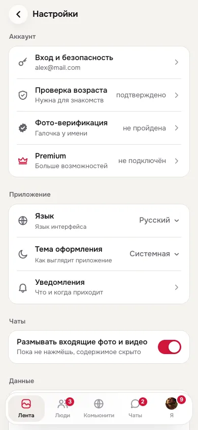
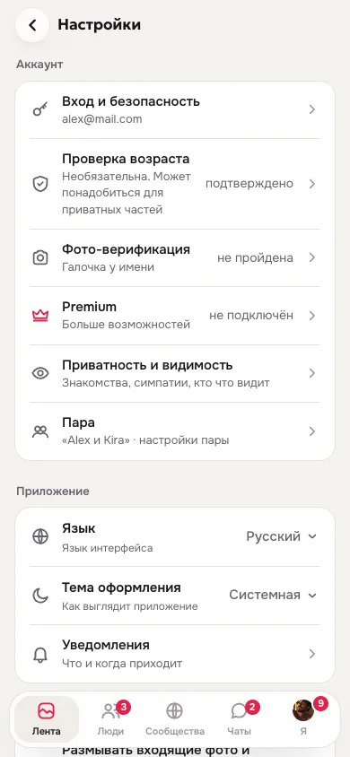
Тосты над листами
Тост больше не закрывает кнопку «Удалить навсегда» — при открытом листе он вверху.
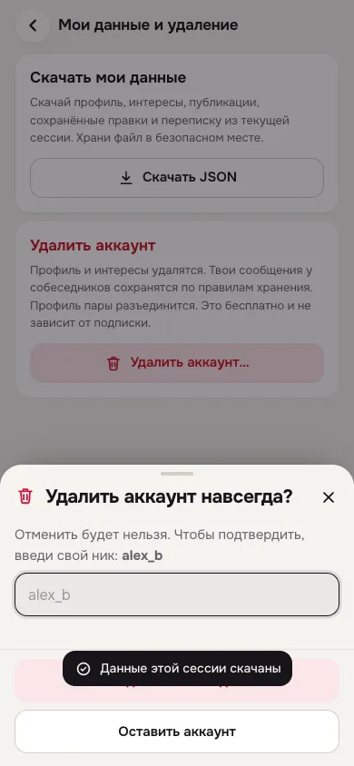
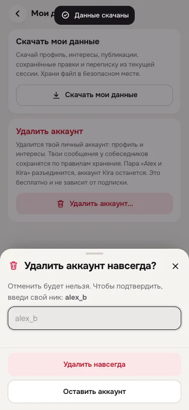
Шапка чата
Имя и статус на стеклянной подложке — сообщения не просвечивают.
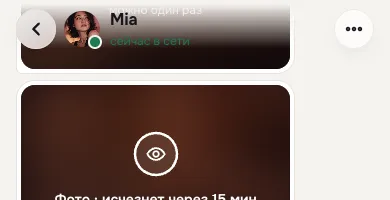
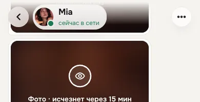
Док на 320 px
«Сообщества» помещается целиком.
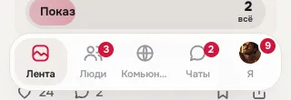
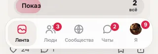
Частично и ждёт решения
| ID | Статус | Что сделано / вопрос |
|---|---|---|
AUTH-015 | частично | Пункт «Приватно по умолчанию» переписан под реальные метки; в лист добавлены «Условия использования» и «Политика приватности» — листы с кратким структурированным текстом и «Назад». Финальная юридическая редакция — за владельцем. |
AUTH-019 | частично | В первой ленте после регистрации — закрываемая карточка «Заверши профиль» (что не заполнено) с кнопкой «Заполнить». Не сделано: в Q01 «Пара видна в знакомствах» отражает реальный дефолт пары (dating:true в coupleProfile) — менять дефолт пары нужно в разделе пары/владельцем. |
ME-025 | частично | Лист «Открыть доступ» предлагает только то, что есть в приватной части (нет «Видео», если видео нет), с количеством («Фото · 4»); текст «Отозвать можно в любой момент: «Я → Приватное»». Отдельного права на «Интересы по доступу» нет — нужен ответ владельца. |
CPL-007 | частично | Правило V19 (док «Я/Мы» открывает «Действовать как») сохранено — это решение владельца и контракт. Сделано: нажатие на уже выбранную карточку в листе открывает профиль (вся карточка — цель, 2 нажатия без поиска мелкой иконки); при несохранённом вводе не уводит. Вопрос владельцу: должно ли нажатие на вкладку в паре сразу открывать «Я», а лист — по повторному/долгому нажатию? |
FEED-043 | частично | В обсуждении C06 ряд действий как у поста: лайк, ответы (с числом, фокус поля), поделиться; заголовок и счётчик считают только живые ответы. «Сохранить» для обсуждений не добавлено — «Сохранённое» (G04) пока хранит только публикации. |
COMM-013 | частично | Аватар сообщества с обложкой — плашка с иконкой, не та же фотография; вкладки C03 при переполнении получают маску на краю. Подпись дока на 320px — общий док (сделано лидом). |
CPL-011 | частично | Кнопка аккаунта в боковой панели рисует aria-expanded по факту открытого поповера и сбрасывается при закрытии; в листе на телефоне фокус сразу на выбранной карточке. Не сделано: закрытие поповера повторным кликом по той же кнопке (поповер модальный, #root инертен) — закрывается Esc/кликом вне. |
CPL-023 | частично | В «Как видят» кнопки читаются как у зрителя: «Нравится» и «Подписаться» (без «от пары»). Блок «Что у вас общего» оставлен: по контракту V10 превью показывает настоящий блок с пометкой-демо; если владелец хочет плашку вместо него — это изменение правила V10. |
NTF-003 | частично | Имя в карточках решений везде «имя, возраст» (связи, приглашение в пару, запросы, заявки). Аватар «Eva и Tom» с буквами — у участников этой демо-пары нет фото, компонент av() тот же, что везде. |
VIS-005 | частично | Выбиваемые из шкалы 22 px → 24 px (уведомления, участники сообщества), герой пары 80 → 88 px. Полная шкала 24/36/44/56/88 описана в V21-INTEGRATION-GUIDE для React; переписывать все 12 размеров в прототипе не стали, чтобы не трогать сотни экранов. |
VIS-006 | частично | Кегль табов в шапке выровнен до 14 px; кнопки следующей карточки подборки 48 px. Текущая карточка подборки осталась 46 px из-за раскладки карточки — описано для React. |
ME-041 | нужно решение владельца | Не менял. Вопрос владельцу: нужен ли вход «Тесты · скоро» в «Я → Моё», или убрать маршруты X05/X07–X09 и QA-пункты, а записи истории подписывать «из теста (архив)»? |
Проверено
Контракт V20 на V21 — проходит. Полный обход всех экранов QA-панели для трёх персон («заполненный», «в паре» как «Мы», «новый») — без JS-ошибок, без «undefined/NaN», без горизонтальной прокрутки. Повторный проход краулера по всем кнопкам и попапам и матрица 320–1920 — см. отчёт аудита.
Не проверено: реальные устройства и касания, экранная клавиатура, оплата, живая пара на двух устройствах.